Condenser HVAC: Service and Repair
Condenser Replacement1. Use a refrigerant recovery system to discharge the refrigerant.
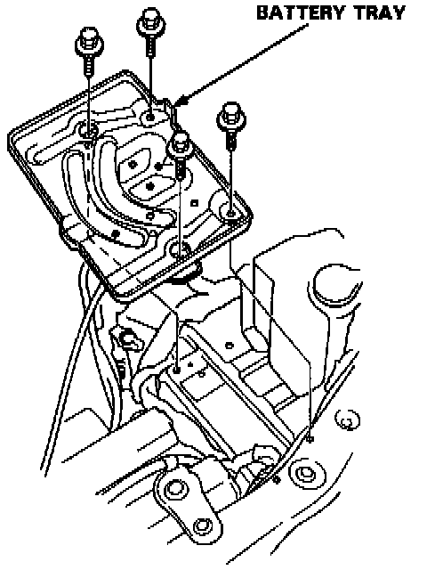
2. Remove the battery and battery tray.
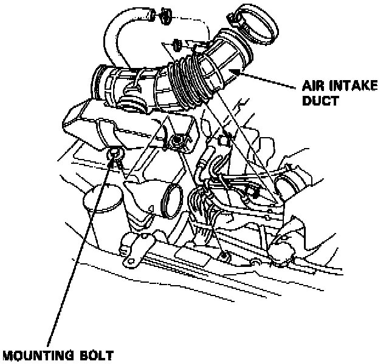
3. Remove the air intake duct.
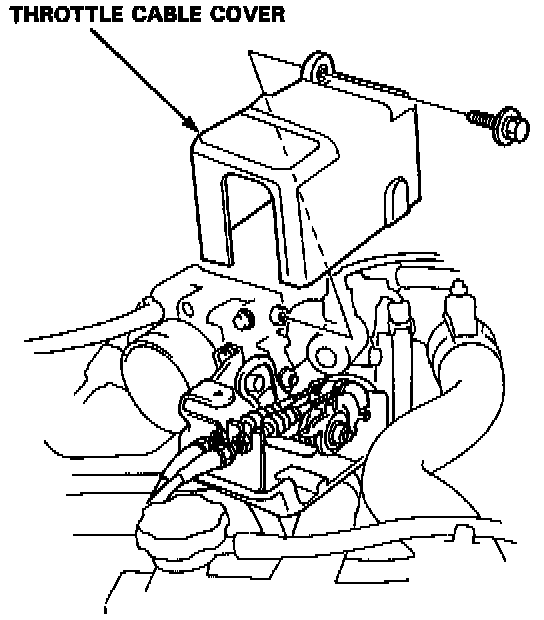
4. Remove the bolt and the throttle cable cover.
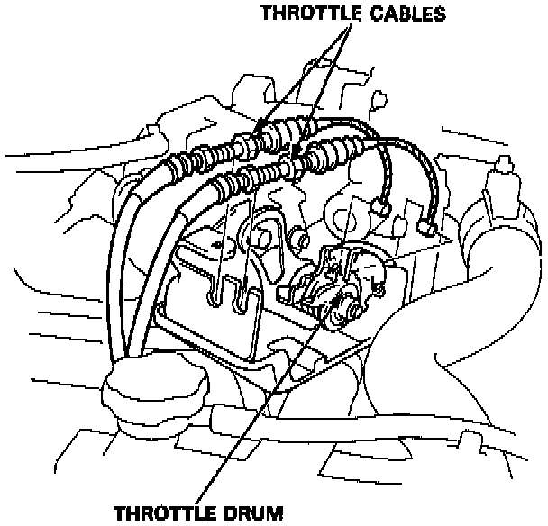
5. Loosen the locknuts and remove the throttle cables from the cable holder.
Then disconnect the cables from the throttle drum.
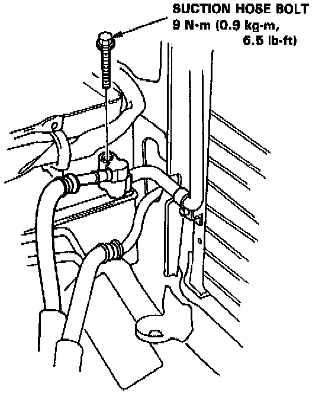
6. Remove the bolt from the suction hose fitting.
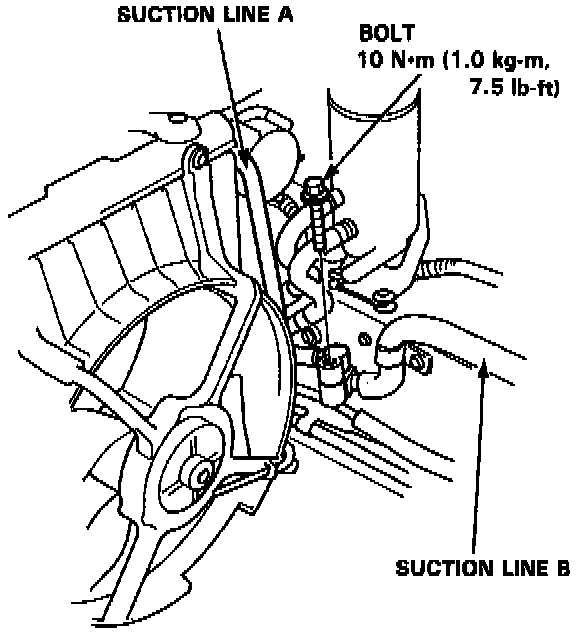
7. Remove the bolt holding suction line A and suction line B together.
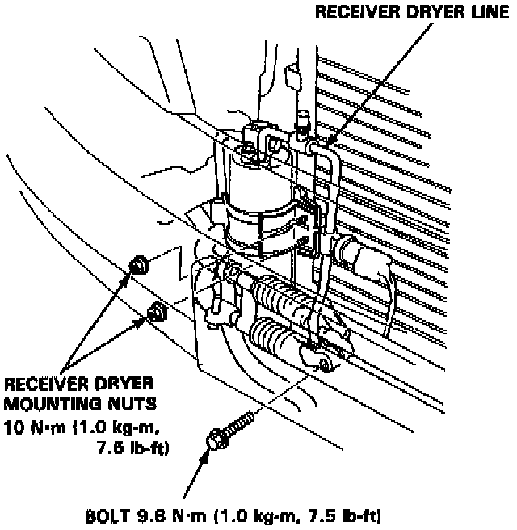
8. Remove the receiver dryer mounting nuts. Remove the receiver dryer line bolt.
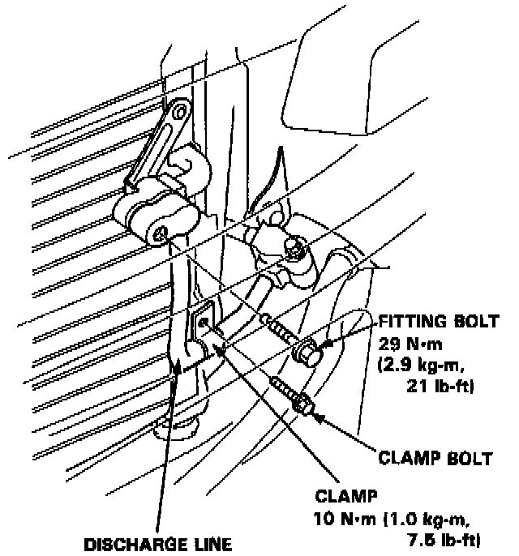
9. Remove the discharge line fitting bolt and the clamp bolt.
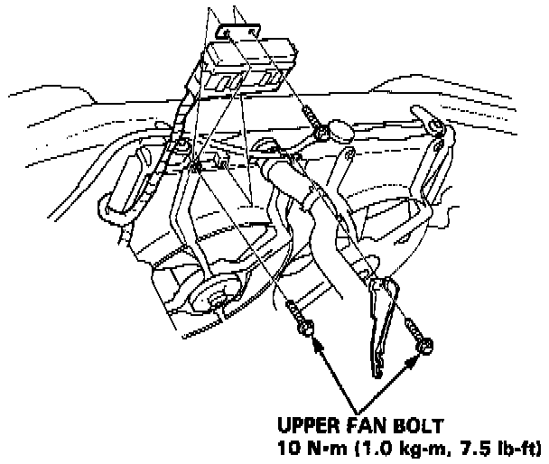
10. Remove the under-hood relay box and upper condenser fan bolts as shown.
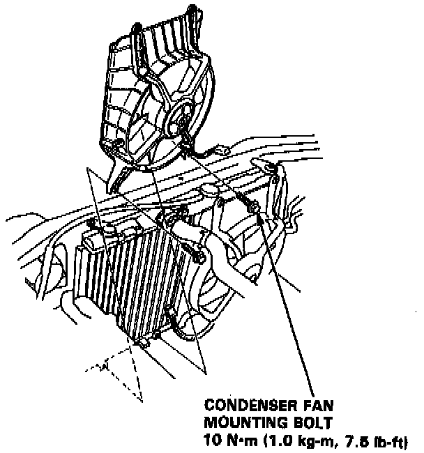
11. Disconnect the condenser fan connector, then remove the lower mounting bolts and the condenser fan.
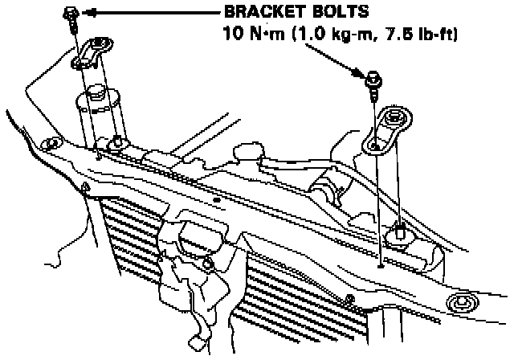
12. Remove the condenser mount brackets as shown.
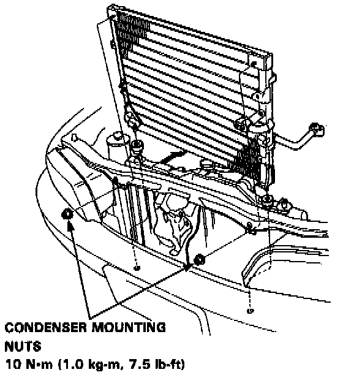
13. Remove the condenser mounting nuts, then lift out the condenser as shown.
14. Install the condenser in reverse order of removal, and:
- Replace all 0-rings with new ones.
- Charge the system and test its performance.